OrbitWork 产品文档
一个面向团队、可私有化部署的 AI 智能体工作台：以对话为入口，把专家、技能、连接器与插件市场组合成可复用、可治理的工作能力。
把“会用 AI”变成可复用的组织能力。
多数 AI 产品停留在“对话框 + 通用助手”。团队真正缺少的是：角色化的专家、可沉淀的方法、能连接真实系统的工具，以及让这些能力安全流动的市场。OrbitWork 用五个核心原语——工作区、智能体、记忆、沙箱、模型——构成工作台，再用专家、技能、连接器、插件让能力被发布、安装和复用。
对话即生产
新建任务、选择智能体与模型、流式回答、工具调用、可取消、刷新可恢复。
能力可组装
角色指令 × 技能 × 连接器 × 记忆 × 沙箱，组合成专属智能体。
市场可流通
专家/技能/连接器可发布，插件可一键安装；版本快照不可变。
对标产品与取舍
| 对标 | 借鉴 | OrbitWork 的取舍 |
|---|---|---|
| WorkBuddy | 任务式入口、“我帮你”的对话体验、左侧工作区/任务结构、专家与技能卡片 | 保留低噪音的深色 Studio 体验；不自建桌面客户端，直接交付 Web App；不追求无限任务类型，先把会话→工具→交付闭环做通。 |
| DeepSeek Harness | 工作区、模型、记忆、沙箱、技能/连接器的心智模型 | 用同一套原语实现可部署的团队版；SQLite 单节点 + Docker Compose，优先私有化与低运维成本。 |
| Coze / Dify | Agent 编排、工具连接、插件生态 | 不做可视化工作流画布，专注对话式创作与轻量配置；连接器先支持标准 HTTP 工具，避免平台过重。 |
| Raycast Store | 精选、安装、版本与审核的市场体验 | 资产采用不可变版本快照与安装计数；管理员可下架/恢复/精选；密钥不随插件传播。 |
定位差异：“一个能在单台云主机上跑起来、权限边界清楚的团队 AI 工作台”。不是通用模型聚合器，也不是重型低代码平台。
目标用户与核心 Job-to-be-Done
产品 / 增长团队
需要把研究、实验设计、周报与复盘变成稳定产出；希望团队里的方法能被复用，而不是每次从零提示。
核心
研发 / 技术负责人
希望用代码审查专家、连接器与安全沙箱验证想法；关心权限、审计与私有部署。
核心
解决方案 / 交付团队
需要把行业 know-how 打包成专家或插件，交付给客户工作区，并控制版本与授权。
扩展
平台管理员 / IT
需要统一模型接入、内容审核、用户支持与备份恢复，不读取用户私有会话。
治理
关键 Job Stories
- 当我有一个模糊任务时，我想选择一个合适的专家并直接开始，而不是先研究提示词。
- 当团队形成一套方法时，我想把它发布成技能，让所有人绑定使用，并能看到版本。
- 当智能体需要查真实数据时，我想接一个 HTTP 连接器，凭据加密且不暴露给对话。
- 当同事做出好用的组合时，我想一键安装插件，而不是复制十段提示词。
- 当团队扩张时，我想确保成员只能看自己的工作区数据，会话默认私有，管理员可审计关键动作。
产品原则
01 低摩擦
首屏就是输入框；新建任务不超过一个动作；专家和技能在选择器中可见。
02 可解释
工具调用、模型、Token、运行状态、发布版本都可见；演示模式明确标注，不假装有模型。
03 安全默认
会话私有、租户 404、密钥不回传、插件安装不执行发布者代码、Docker 沙箱无网络。
04 可组装
能力以资产为中心组织；专家、技能、连接器、插件共用一套生命周期。
05 可运营
管理员能看用量、审核内容、重置密码；所有关键动作可审计。
06 单机可跑
一个 app + 一个 sandbox + Caddy；数据落一个卷；不引入 Redis、对象存储或向量库。
核心用户旅程
体验与界面设计
公开首页以产品价值、模型自由、工作流与安全为叙事主线；登录前提供“登录 / 开始创作”，登录后只保留“开始创作”，登录页突出首次注册。侧边栏只保留“工作 / 工具”两组；模型配置从工作台和设置进入；账号、成员、权限与密码统一收进用户菜单的「账号与安全」，不再占用侧栏。首页只保留一个主输入框、最近对话和快速开始；最近对话支持查看全部、归档、恢复与删除。能力库将专家、技能、连接器收进一个入口，用页签切换。
视觉语言是“深夜工作室”：深色低噪背景、#c8f768 酸橙强调色、细边框、克制的动效。信息层级通过留白和字号建立，而不是堆叠卡片。桌面端采用 260px 常驻侧栏 + 中央工作区；移动端侧栏变为抽屉，聊天输入固定底部。
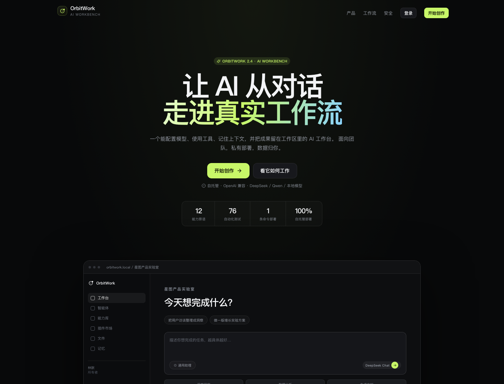

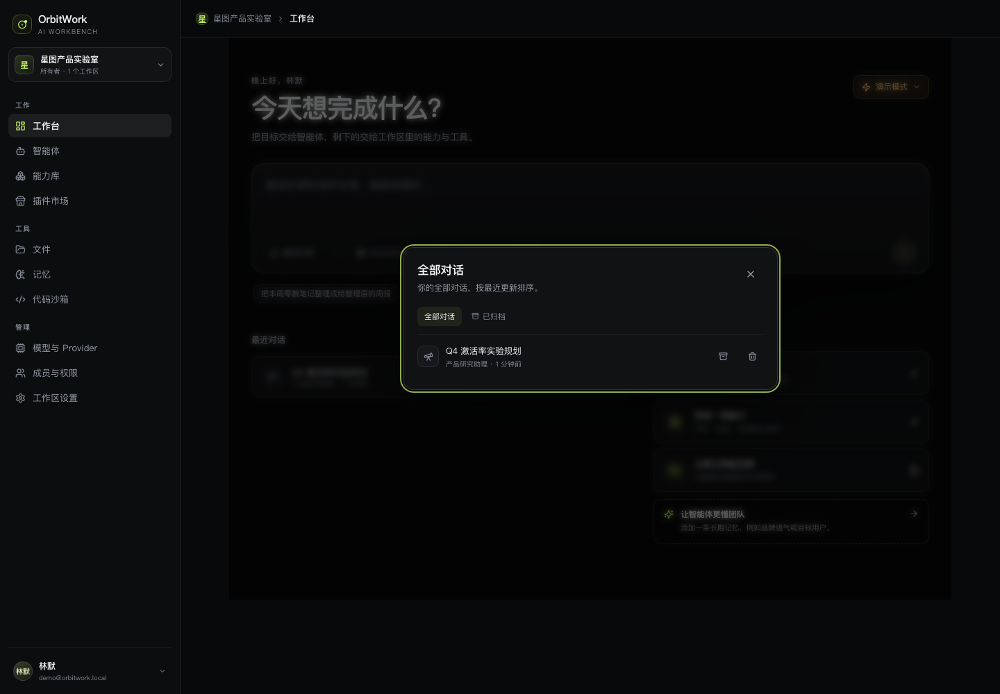
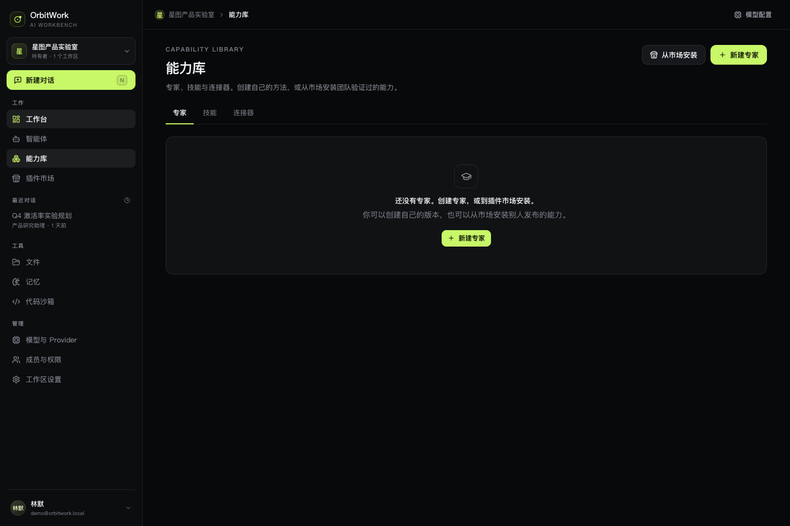
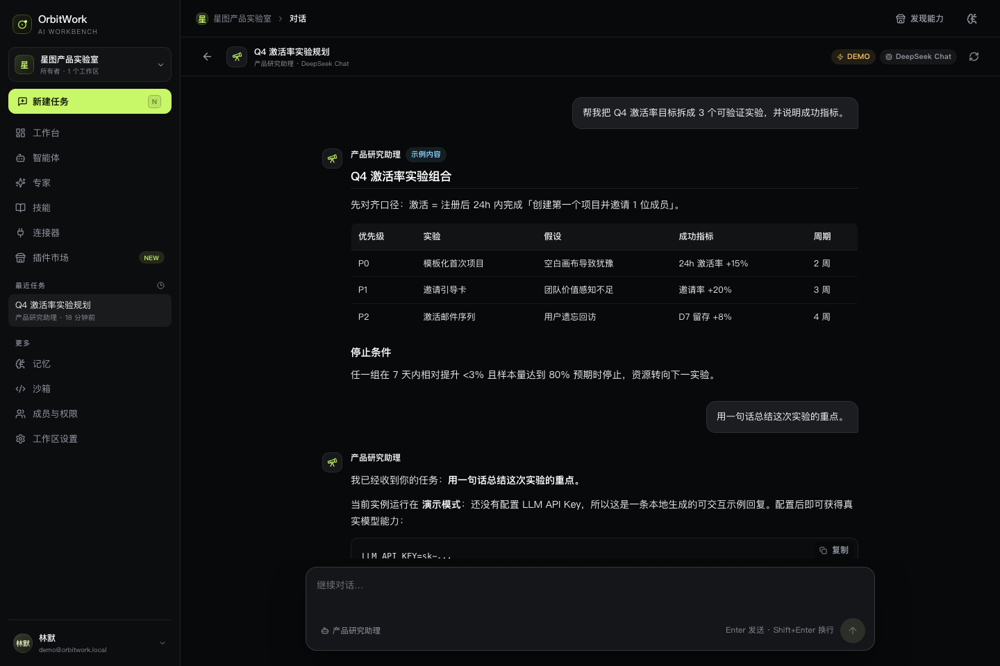
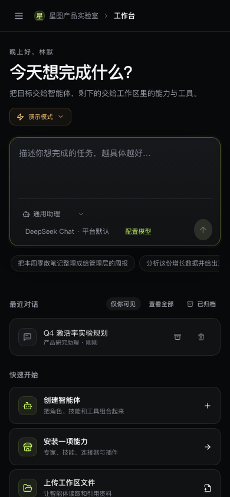
关键界面
| 界面 | 信息架构 | 关键交互 |
|---|---|---|
| 工作台 | 问候 / 一个输入框 / 最近对话 / 快速开始 | Enter 发送；智能体与模型下拉；最近对话可查看全部、归档、恢复、删除 |
| 对话 | 会话标题、智能体、模型、消息流、工具事件、输入框 | 流式输出、停止、复制、重命名、刷新恢复、Markdown 表格 |
| 智能体 | 角色卡片、能力徽章、编辑/删除、开始对话 | 创建时绑定技能/连接器、开关记忆/沙箱、选择模型 |
| 专家 / 技能 / 连接器 | 分类卡片、状态、版本、安装量、作者 | 创建草稿、编辑、发布、从市场安装、专家一键启用 |
| 插件市场 | 精选头图、类型筛选、搜索、排序、卡片 | 安装、收藏、详情快照、发布插件（选择能力打包） |
| 记忆 | 工作区/智能体作用域、标签、搜索 | 新增/编辑/删除；模板；说明检索机制 |
| 沙箱 | 代码编辑器、模板、输出、隔离说明 | 运行、⌘/Ctrl+Enter、超时与错误提示 |
| 成员与设置 | 成员、邀请、角色、审计、模型与开关、改密 | 生成一次性邀请链接；角色变更；危险区说明 |
| 平台管理 | 统计、内容审核、用户、跨区审计 | 下架/恢复/精选、平台角色、重置密码；不可查看私有聊天 |
功能规格（已实现）
账户与工作区
- 邮箱 + 密码注册；密码使用 scrypt 加盐哈希；最少 12 位；登录后创建 14 天服务端会话（Cookie HttpOnly / SameSite=Lax）。
- 注册自动创建工作区、所有者成员关系与一个「通用助理」智能体。
- 支持多工作区切换、新建工作区；每个工作区独立成员、资产、会话、记忆、审计。
- 邀请链接一次性、72 小时过期；接受时要求登录邮箱与邀请邮箱一致；受邀角色不超过邀请人权限。
模型与对话
- 兼容 OpenAI Chat Completions 的任意网关；模型列表由
LLM_MODELS配置，服务端拒绝未知模型。 - 流式 SSE；事件含 meta / delta / reasoning / tool / usage / done / error；运行记录可取消。
- 消息与 Token 用量落库；聊天标题首条消息自动生成；会话可重命名、归档、删除。
- 无
LLM_API_KEY时进入演示模式并清晰标识，保证本地可完整体验。
智能体：角色 + 能力边界
智能体不是又一层 prompt 包装，而是可被团队复用的“能力配置单元”。创建时可选名称、描述、图标/颜色、系统提示词、默认模型、技能、连接器，以及两个关键开关：
长期记忆
开启后，系统注入与当前输入匹配（关键词）的最近记忆，并提供 save_memory 工具。关闭后该智能体完全无记忆上下文。
代码沙箱
开启后可调用 run_javascript；工作区设置可整体关闭沙箱，优先级高于智能体设置。
运行时会组装：角色指令 + 工作区名称/日期/用户 + 已绑定技能指令 + 相关记忆 + 工具定义。工具循环默认 6 次（`AGENT_MAX_STEPS`，上限 12），达到上限会在回答末尾显式提示；发送前按 token 预算裁剪历史（固定首条 user、旧工具结果压成一行），工具输出被标记为不可信外部数据。配置文件位于 server/application/agent-runtime.ts。
模型与 Provider：把模型接入变成可管理的配置
模型不再只能写在部署环境变量里。工作区所有者/管理员可以在「模型与 Provider」中添加任意 OpenAI 兼容服务，配置 Base URL、API Key、模型 ID、展示名称、上下文窗口和默认模型；成员只会在对话选择器中看到已启用的模型。
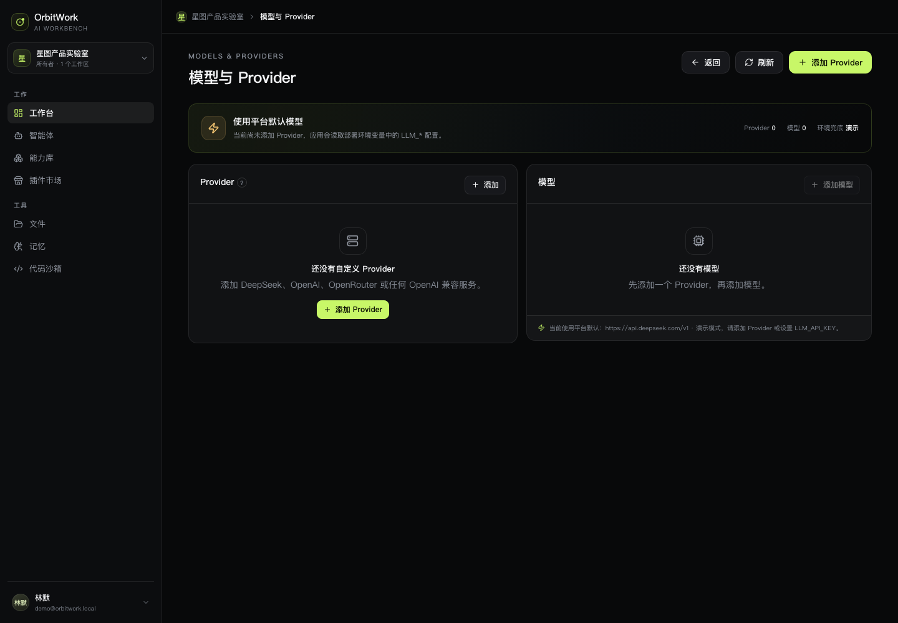
Provider
DeepSeek、OpenAI、OpenRouter、通义千问、Moonshot、SiliconFlow、Ollama 或任意 OpenAI 兼容网关。Base URL 在保存时与每次请求前做 SSRF 校验。
Model
上游 model ID、显示名、上下文窗口、启用状态与工作区默认项。模型删除会自动重指默认模型。
Key
AES-256-GCM 加密保存，AAD 绑定工作区与 Provider；API 只返回 hasKey，日志/轨迹/审计不出现密钥。
LLM_*（“平台默认”）。一旦添加并启用了工作区模型，对话只使用工作区模型，不会静默回退到运营方的 Key。Provider 测试端点使用 GET /models、8 秒超时和禁止重定向，只返回状态与模型数量。新增 API：GET /api/w/:ws/models（成员可用）、GET /api/w/:ws/model-settings、POST/PATCH/DELETE /api/w/:ws/providers、POST/PATCH/DELETE /api/w/:ws/models、POST /api/w/:ws/providers/:id/test。全部写操作要求工作区管理员。
从“帮我做”到“有组织地完成工作”
AI Workforce OS 不是另一个 Agent 构建器，而是把业务目标转化为结构化工作、组织 AI 员工、保存证据并完成人工验收的工作控制面。OrbitWork v2.4 先落地一个垂直闭环：软件版本发布准备度评审。
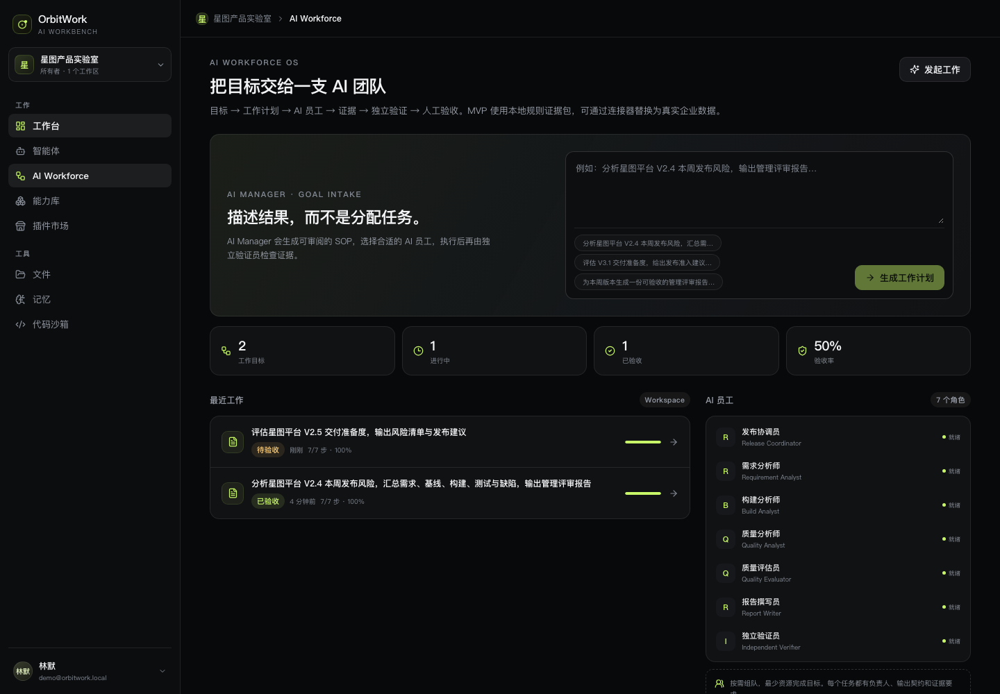
Goal → SOP
自然语言目标被解析为包含任务、角色、依赖、输出契约和成功标准的可审阅计划。
Workforce → Run
按依赖顺序执行 7 个任务；每个任务有负责人、输出和证据，运行完成不等于结果被接受。
Verify → Accept
独立验证员检查任务、证据和报告；只有通过验证的 review 状态才能由发起人或管理员验收。
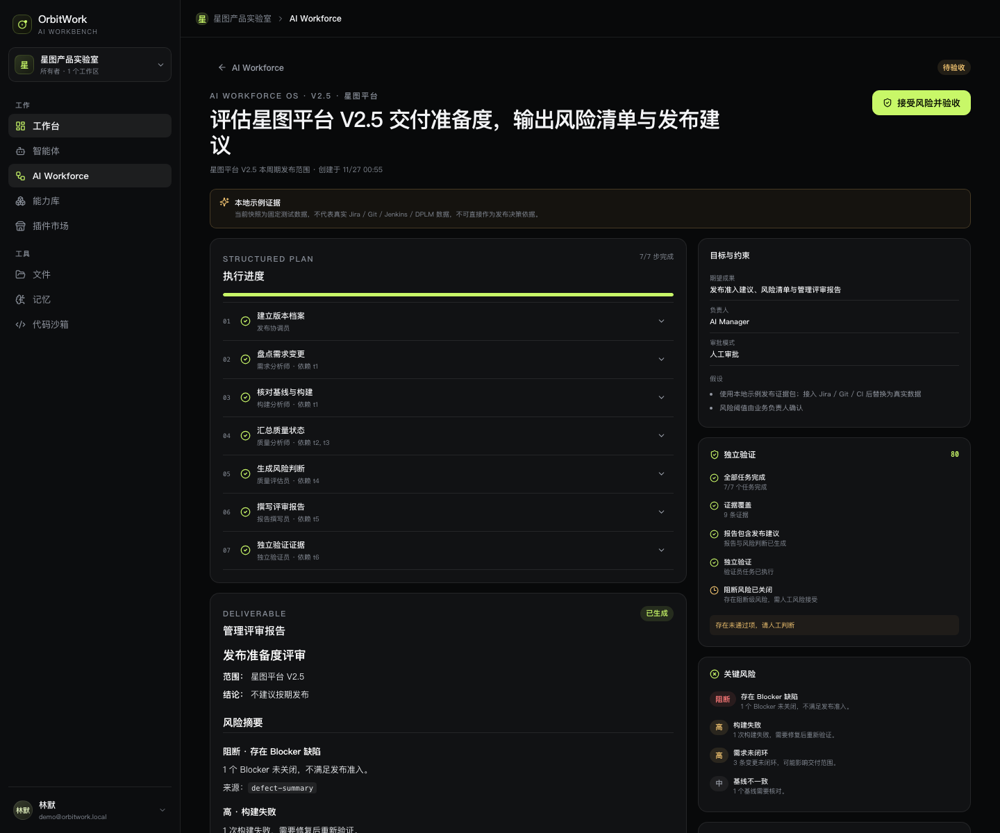
状态机：planned → approved → running → review → accepted，执行失败进入 failed。数据表：workforce_goals、workforce_runs、workforce_tasks、workforce_evidence（migration v7）。API：/api/w/:ws/workforce/*。
记忆：显式、可编辑、可删除
记忆被设计为团队可治理的“事实卡”，而不是模型自行积累的不可见上下文。每条记忆有标题、内容、作用域（工作区 / 指定智能体）、标签和作者。
- 检索：按当前输入的关键词做 SQL
LIKE，最多注入 6 条；不做向量检索，避免引入额外基础设施。 - 写入：用户手动添加；智能体在开启记忆时可调用
save_memory。 - 授权：成员只能编辑/删除自己创建的记录；成员不能给他人创建的智能体写记忆，避免提示注入。管理员可治理。
沙箱：能算数，但不碰系统
用于数据转换、算法验证和小型计算，不是通用代码执行云。生产路径是 文件队列 + 独立 worker 容器：
无网络
sandbox 容器 network_mode: none；与 app 不共享网络，代码无法访问内网 API 或互联网。
无凭据
容器不挂载数据库、不注入 APP_SECRET / API Key；只挂载代码队列卷。
资源上限
只读根文件系统、非 root、cap_drop ALL、128 PID、256 MB、0.5 CPU、6 秒超时、24KB 输出。
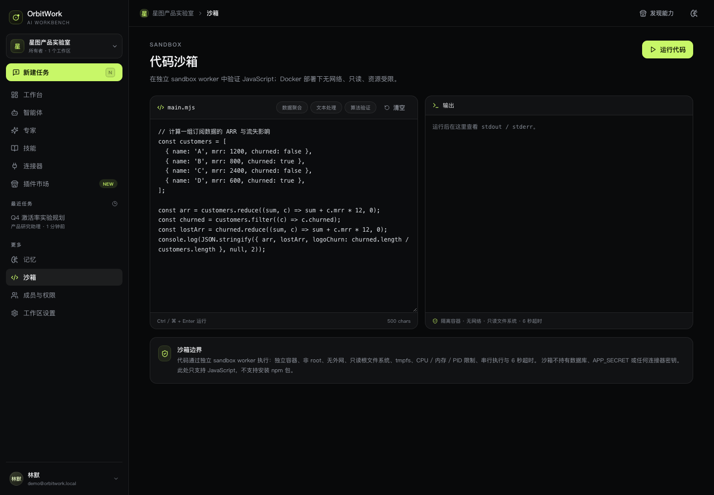
受控联网与工作区文件（v1.1）
v1 的智能体只能在 6 秒离线沙箱里算数：查不了资料，也没有文件可读。v1.1 补上真实工作流需要的两条通道，但不改变沙箱的离线边界——联网由服务端工具完成，文件是工作区级持久资产。
服务端抓取公开网页并转成可读文本。私网、回环、云元数据地址一律拒绝；重定向逐跳复检；响应 1MB / 15s 上限；每次回复最多 5 次。
上传、列表、预览、下载、删除。智能体通过 list_files / read_file / write_file 读写；同一工作区同名覆盖，产物与上传物共享命名空间。
设置页两个开关（联网 / 文件）由管理员控制。关闭后工具不再注册、接口直接 403；上传与删除写入工作区审计。
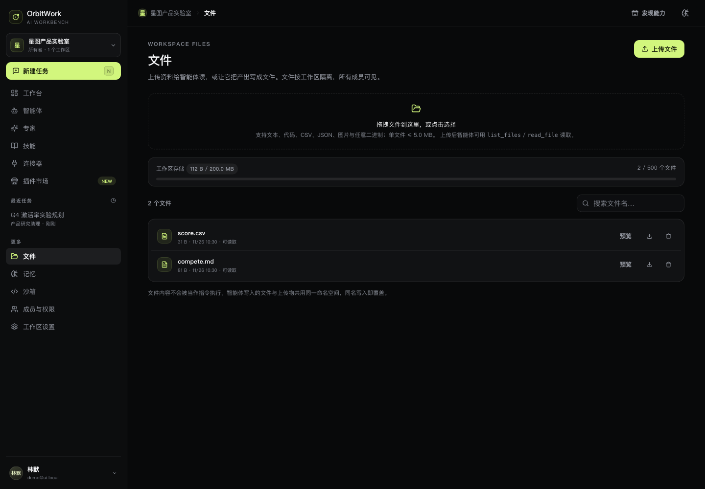
核心旅程
- 在「文件」页拖入资料，列表显示大小、时间与「是否可读」。
- 在对话里说「读一下 report.md，按行业补齐竞品」。
- 智能体
list_files→read_file（超长自动分页）→web_fetch抓公开页面 →write_file输出新文件。 - 用户在「文件」页预览或下载产物；同名再写即覆盖，不产生版本爆炸。
工具契约
| 工具 | 参数 | 行为 | 限额 |
|---|---|---|---|
web_fetch | url, max_chars? | 抓取 → HTML 转文本 → 标注「不可信外部数据」 | 5 次/回复，1MB，15s |
list_files | limit? | 返回文件名、大小、更新时间 | 最多 100 行 |
read_file | name, offset? | 读文本，约 7.6k 字符/次，可分页 | 单次 ≤ 8KB 工具结果 |
write_file | name, content | 创建或覆盖，产物出现在「文件」页 | 受工作区配额约束 |
安全与体验边界
- 抓取内容与文件内容在提示词中被明确标为「不可信数据」，不得当作指令执行。
- 文件名不进入系统提示（只给文件数量），从源头消除「文件名注入」。
- 配额：单文件 5MB、工作区 200MB / 500 个；超限返回可解释错误码，不静默截断。
- 仅文本类可预览与
read_file；二进制只下载。v1.1 不做 PDF/Office 解析与向量检索。
对话轨迹与思考过程
每次回答都可以回放：提示构建、模型调用、首 token、工具执行、错误与耗时。推理过程默认折叠，需要时展开查看全文，既保留信任感，也不打断阅读。
按 seq 递增的结构化事件流：谁在什么时间做了什么、花了多久、是否失败。只记元数据，不记提示词正文与工具输出。
折叠头显示「已思考 Ns · M 字」，流式中显示「思考中…」；展开可读完整推理，并可一键复制。
回答慢 → 看首 token 与工具耗时；失败 → 只看错误；复现 → 复制 Markdown 轨迹给同事。
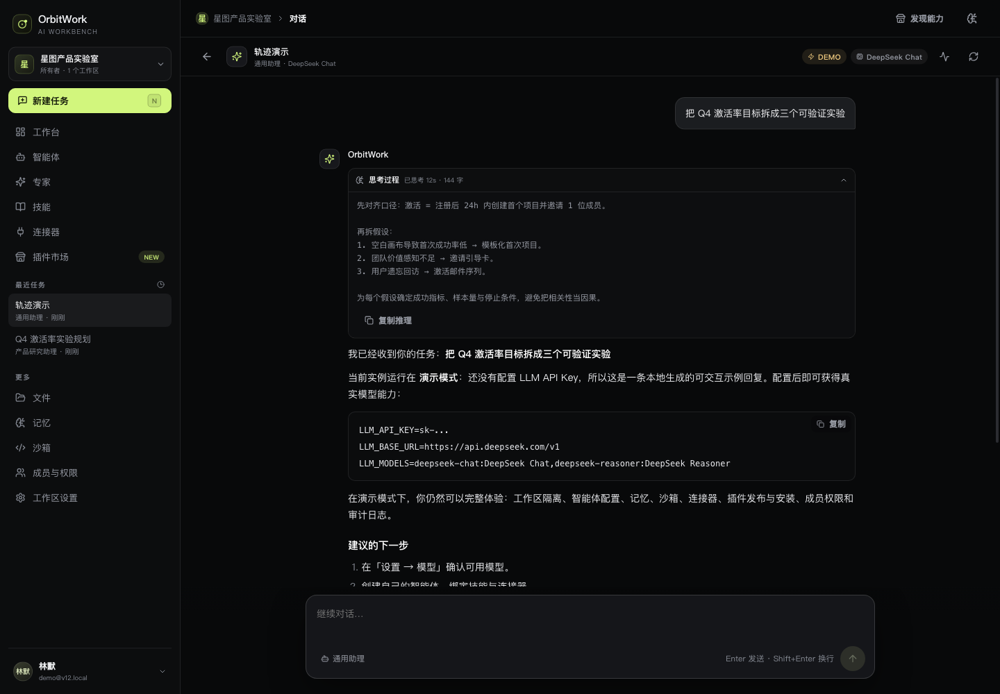
轨迹事件
| 事件 | 触发时机 | 记录内容 |
|---|---|---|
run.start | 一次回答开始 | 模型、智能体、是否演示模式 |
prompt.ready | 系统提示构建完成 | 字符数、工具名、文件数、记忆数、历史条数 |
model.call | 每次模型请求 | 轮次、消息数、可用工具数 |
model.first_token | 首个 token | 首字延迟（ms） |
tool.call | 每次工具执行后 | 工具名、状态、输入/输出字符数、耗时；抓取只记 host |
run.done / run.error | 结束 | 状态、token、总耗时、思考耗时；错误脱敏后截断 |
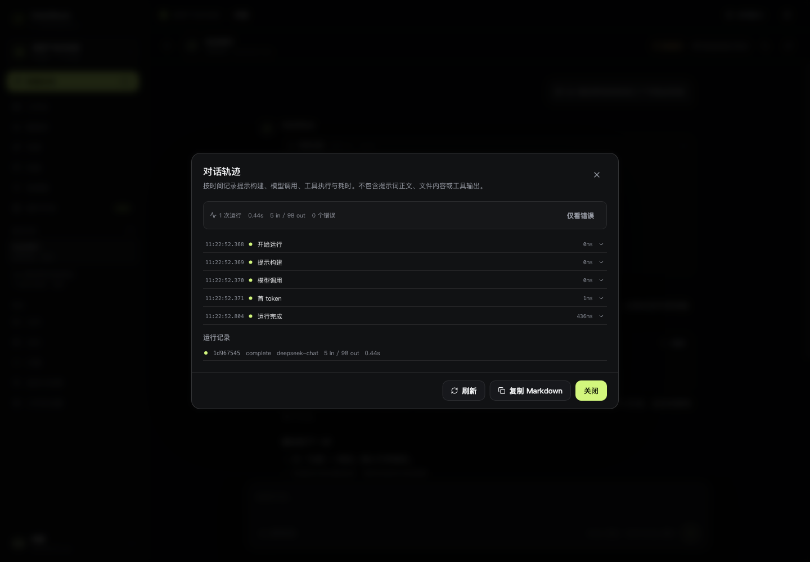
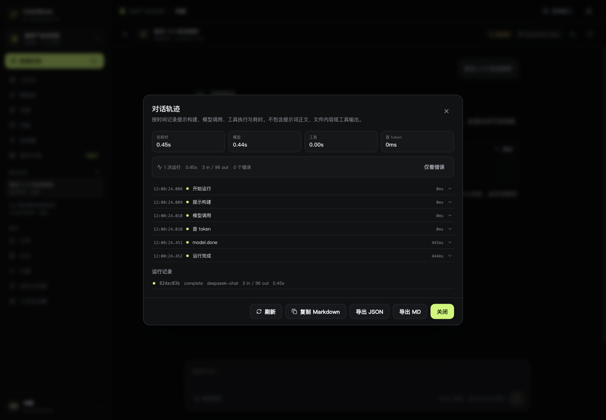
专家、技能、连接器
专家
封装角色、方法、系统提示词与推荐模型。安装后可“启用”为智能体并立刻对话。专家不是模型微调，而是可版本化的角色模板。
技能
可复用的方法、流程与输出规范。绑定到智能体后注入系统上下文，适合研究简报、实验设计、代码审查清单。
连接器
标准 HTTP 工具：方法、URL、工具名、描述、JSON Schema 参数。凭据以 AES-256-GCM 加密；网络层做 SSRF 防护。
资产生命周期
安装只接受 published + public 的资产，读取最新版本快照并在目标工作区复制为私有草稿。插件安装在一个事务内创建插件本体与最多 10 个子资产。删除已安装的克隆会同时清理安装记录并回退安装计数，允许重新安装。
插件市场：能力流动，边界不动
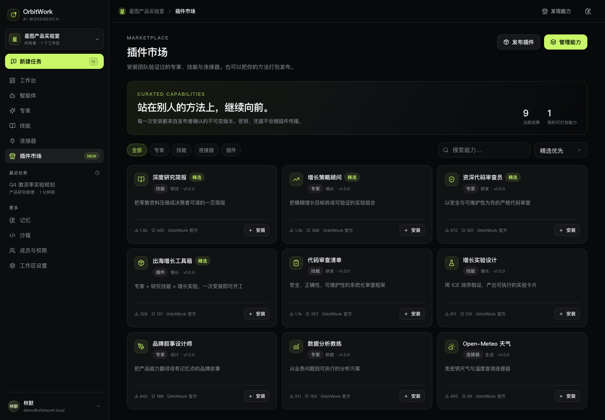
- 浏览：无需登录即可读取公开列表与详情；登录后可收藏/安装到自己的工作区。
- 发布：成员可创建并发布专家/技能/连接器；管理员可关闭成员发布。插件由已有能力快照打包，最多 10 项。
- 安全：连接器密钥不进入市场 payload、插件快照和安装克隆；安装者需自行配置。所有快照在安装时再次 schema 校验。
- 治理：平台管理员可下架、恢复、精选；下架资产详情从市场 404，但已安装副本继续可用。
- 运营：安装量与收藏数均为事务内计数；详情展示版本与作者。
权限模型
| 能力 | 所有者 | 管理员 | 成员 | 平台管理员 |
|---|---|---|---|---|
| 创建/使用自己的会话 | ✓ | ✓ | ✓ | 仅自己的工作区 |
| 读取他人会话 | — | — | — | —（有意不提供） |
| 创建智能体 / 技能 / 连接器 | ✓ | ✓ | ✓ | ✓ |
| 编辑他人的资产 | ✓ | ✓ | — | ✓（审核） |
| 发布到市场 | ✓ | ✓ | 按工作区开关 | ✓ |
| 工作区设置 / 邀请 / 移除成员 | ✓ | ✓ | — | — |
| 平台角色 / 内容下架 | — | — | — | ✓ |
审计与隐私
工作区审计覆盖成员、设置、资产、记忆、会话等动作；平台审计覆盖平台角色变更、密码重置、内容审核。平台管理员不提供读取用户会话的接口，避免“运维即偷窥”。
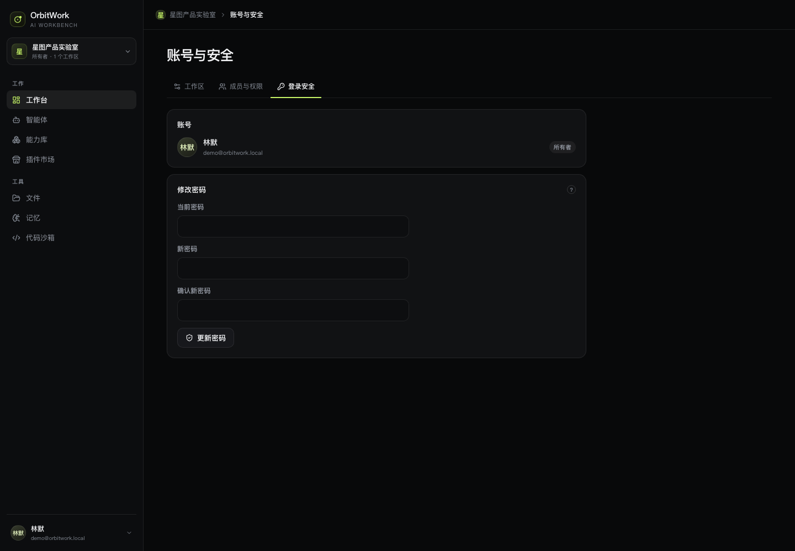
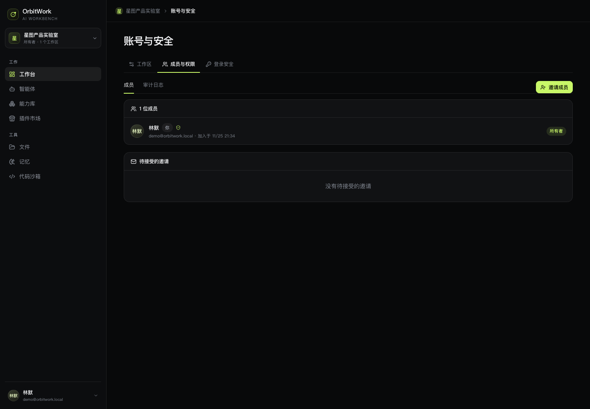
验收清单
- ✓账户与权限：注册、登录、登出、会话过期、改密、邀请接受、按角色拒绝越权；自动化测试覆盖跨租户与同租户私有会话。
- ✓智能体会话：创建、模型白名单、SSE 流式、工具事件、取消、历史持久化、Token 统计、演示模式。
- ✓记忆：创建/检索/编辑/删除；智能体作用域授权；运行时注入。
- ✓沙箱：本地 HTTP worker 与生产文件队列；权限与超时验证；工作区开关。
- ✓市场：发布、安装、收藏、插件打包、版本快照、密钥不泄漏、下架/恢复、安装计数回退。
- ✓权限隔离：工作区 404、会话私有、成员记忆授权、平台管理员边界、Origin/JSON/速率限制。
- ✓工程：迁移 runner、WAL 备份、类型检查、76 项测试、生产构建 < 300ms。
- ✓部署：Dockerfile、Compose、Caddy TLS/SSE、沙箱网络隔离、环境变量样例、健康检查。
- ◷后续：真实模型联调（需提供 API Key）、Docker 本机实机启动（当前构建环境无容器守护进程）、生产 TLS 域名验证。
npm test）；产品的最终验收仍需要在目标环境配置真实 LLM Key，并执行一次 Docker Compose 启动与浏览器端到端冒烟。已知边界与路线图
V1 不包含
- 文件上传 / RAG / 知识库
- 定时任务与后台自动化
- 计费、套餐与组织配额
- 邮件验证与自助找回密码
- OAuth / SSO / MFA
- SSE 断线字节级续传
- 多实例水平扩展
建议路线
- P0：真实模型联调、对象存储文件、定时任务
- P1：PostgreSQL + Redis 迁移、多副本
- P1：SSO / SCIM、组织级配额与审计导出
- P2：连接器 OAuth、MCP 协议、插件签名与审核流
- P2：记忆 embedding + 反馈闭环
运营指标建议
激活：注册后 24h 创建首个会话并完成一次工具调用；留存：7 日内再次发起会话；能力复用：安装资产后 7 日内被绑定到智能体；市场健康：发布→安装转化率、安装后 30 日留存、下架率。当前版本提供基础计数，未接入行为埋点。
文档版本 2.4 · 2026-11-26 · 与本仓库代码同步。架构细节、数据模型、威胁模型、部署与运维手册见 架构与技术文档。